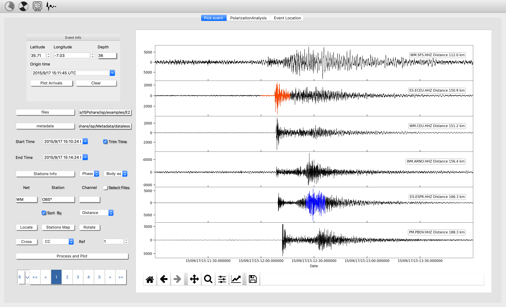
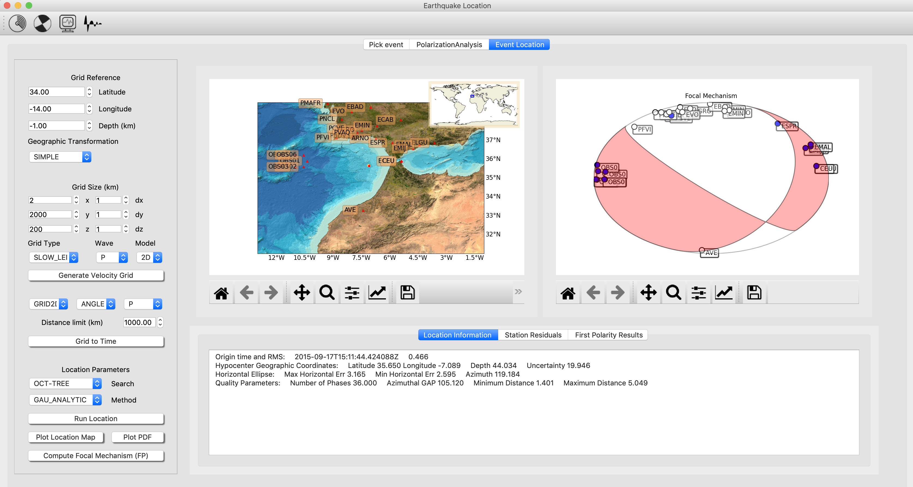
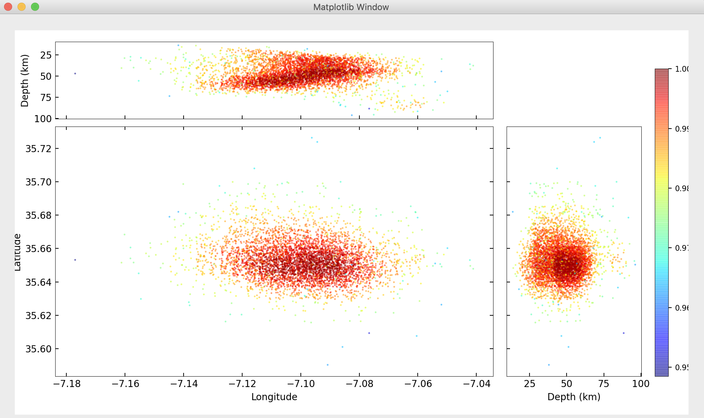
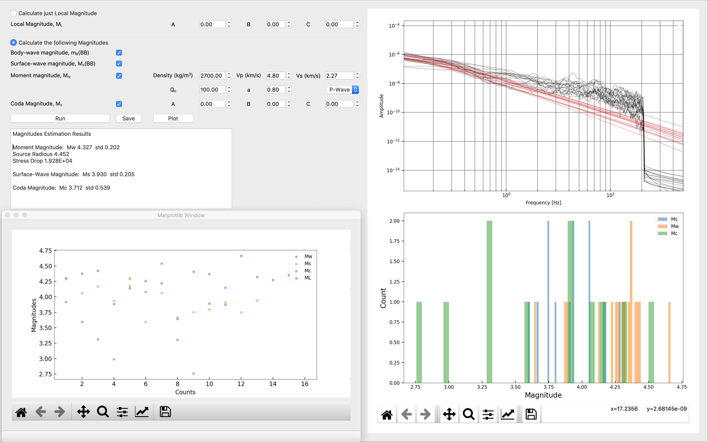

Earthquake Location
The module Earthquake analysis allows you to analyse waveforms, polarization analysis of seismograms 3-components, calculate different magnitudes and finally locate an event and estimate the focal mechanism (First Polarity). We will walk through all of the functionality following this scheme:
Pick Event
From top to bottom in the left side of the window you will see,
-
Event Info. This small box let enter information about an event, in this way you can plot the theoretical arrivals (ak-135F) with respect your seismograms.
-
Files. By clicking in this button you will place the path of your files (miniseed or sac).
-
Metadata. By clicking in this button you will place the path to you metadata file. The metadata file must contain the information of all of the stations seismograms you want to analyse (metadata must be a xml or dlsv).
-
Start Time and End Time. The time boxes can be selected checking “Trim Time”. If you choose this option all the seismograms will be cut in accordance with the selected time window.
-
Stations Info will deploy a table with the fundamental information of the seismograms.
-
Phase box. This combo box allow the selection of specific phases for picking it in the seismograms.
-
Waves box. You can Choose Body, surface, coda or noise. With this selected you can highlight a time window of the seismogram for further analysis.
-
Net, Station and Channel. You can fill this boxes (also using wildcards) to select specific files from your files folder (check “select files”).
-
Locate. After pick some phases in your seismogram you can locate an earthquake and show a location map. Previously you must have calculated travel-times for your velocity model (Further details in Event Location tab. 2.3)
-
Stations Map will show you the location of the stations that corresponds to the seismograms of your folder. The seismograms metadata must match with the metadata information.
-
Rotate. This option will rotate all your station - 3 components (must be named N,E,Z) to the GAC taking the reference the data of event info.
-
Cross. This button will compute the cross-correlation (cc) or the autocorrelation of all processed seismograms with respect the reference “Ref”, the number of the seismogram from top to bottom.
-
Process and Plot. This action will read the seismograms from the selected folder and will carry out the processing from the established “MACRO”. Further details in MACRO section "Macros".

Additional options from the toolbar are:
File
File: New location will clean the picks that are saved automatically for be ready to compute new picking/location. File: Write Files will write in the folder you select the processed seismograms.
File: Open Settings will open a window with the specific parameters of the subprocess that you can carry out in this module (sta/lta, wavelet detection, spectrogram, entropy…).
Actions
Actions: Macro will deploy a window with all of the processing options. (See section 7). All of the processing options will be applied once you press the button Processing and Plot.
Actions: Magnitude Calculator will open a window in which you can compute different magnitudes. For open this you must have estimated an event and have selected the time-windows in the seismograms that you want the magnitudes be calculated.
Actions: Run Picker will carry out the automatic detection/classification of P- and S- waves from the previously loaded “Neural Network”. You must have three components per stations (named N,E,*Z). BE CAREFULL this computationally demanding.
Action: Detect event will associate the automatic picks carried out by the wavelet picker ant will declare an event. The events will be shown in the seismograms window.
Action: Open Earth Model Viewer will open a tool to visualize 3D velocity models. For visualize an Earth Model you need the binary files (buf and hdr) created in the tab Event location.
Compute
Compute: STA/LTA from all processed seismograms and will plot the result together. STA/LTA takes the parameters from Parameters Settings.
Compute: CWT (CF) from all processed seismograms and will plot the result together. CWT takes the parameters from Parameters Settings.
Compute: Envelope from all processed seismograms and will plot the result together.
Compute: Spectral Entropy from all processed seismograms and will plot the result together. Spectral entropy is estimated in small time windows see Parameters Settings. . All Seismograms: Plot together all seismograms.
Stack: Compute (linear, nth-root or PWS) stack of all processed seismograms.
Go
Will ship you to the rest of ISP modules (RFs, Array analysis….).
Multimedia Material (Pick Event)
The following video shows a basic analysis of an earthquake
Polarisation Analysis
The Polarization Analysis is designed to analyze the three seismograms components from a station. You can freely rotate using the rotation RT or the LQT your NEZ components an angle (Rot Angle) with an Incidence angle (Inc Angle).
The Particle motion of the processed seismogram is view clicking in “Plot Polarization”. This option will plot all the time window in a 3D view and in three 2D plot views.
If you want to make a sliding window analysis of the polarization press “Polarization Analysis”. This will carry out a polarization analysis on windows length and frequency bandwidth specified by the user over the full analyzed seismogram.

For a full particle motion analysis, press “Plot Polarization”. This will open another window with a 3D particle motion on the left and the three characteristic views on the right.

Event Location and Focal Mechanism (FP)
In the Event Location Frame the user can configurate the velocity grid 1D/3D model, locate earthquakes and compute Focal Mechanisms.

First it is needed to set a Velocity grid framework (Grid reference and transformation type are mandatory). For now is only available Transformation Simple and Global.
Next, the Grid dimensions (Grid Size). Case 2D the dimension always must be 2 and the grid reference is referred to the corner SW. Case 3D the grid reference is the center of the Grid. Choose the grid type and the wave and then generate the velocity model binary files by clicking “Generate Velocity Grid”.
Once the binary files are generated you can check the results in the folder:
ISP/earthquakeAnalysis/location_output/model
- Where and how place the velocity models?
2D models (see example)
LAYER 0.0 6.1 0.0 3.49 0.0 2.7 0.0 LAYER 11.0 6.4 0.0 3.66 0.0 2.7 0.0 LAYER 24.0 6.9 0.0 3.94 0.0 2.7 0.0 LAYER 31.0 8.0 0.0 4.57 0.0 2.7 0.0
ISP/earthquakeAnalysis/location_output/local_models
3D models
ISP/earthquakeAnalysis/location_output /model3D (see example)
Every depth layer must be placed in files called, for example
Layer.P.mod5.mod
Which means that inside this file there is the grid for the layer at depth 5km.
The layer must be a matrix with the values in the rows from top to bottom E to W and from left to right S to W
The most important step is to generate the travel-times for all the stations inside the maximum distance the user determine. Please be sure that you have load the metadata previously in seismogram analysis.
The generated travel-times will save in
ISP/earthquakeAnalysis/location_output/time
Once you have complete the above steps you can locate the earthquake and the focal mechanism. **For global is not necessary generate the velocity grid and travel times.
To visualize the detailed Probability Density Function, press “Plot PDF” once you have already carried out the location.

Moreover, if you have picked the seismic phases and have been designated the polarity in “Event frame” , you will be able to obtain the Focal Mechanism (it uses the subprogram FocMec)
Earth model Viewer
The Earth Model Viewer is intended to help to visualize 3D Earth velocity models as Fig 2.8. Just select the binary file *.buf (can be generated from the model as described in previous section). Next, select the depth of the layer, the cross sections in longitude and latitude and the press plot.

Magnitudes Estimation
With the Magnitude Estimation you can calculate: Local Magnitude (ML) or Body-wave (mb), Surface-wave (Ms), Moment Magnitude (Mw) and Coda Magnitude.
To estimate the magnitudes you have to select a time window of body, surface or coda on the seismograms.
- Units must be on velocity, so you must remove the response of the instrument to velocity, previously to open the Magnitudes window. For Local magnitude you have to remove the response of Wood-Anderson instrument.
- The hypocenter must be already calculated. The program will read the *.hyp file before open Magnitudes window.
If you place 0.00 on all parameters of local or coda magnitudes, the program will calculate these magnitude with default parameters as follows:
Coda Magnitude:
Values for California a = 2.0; b = 0.0035; c= -0.87
Mc_value = anp.log10(t_coda)+bdist+c
Local Magnitude:
a = 1.11; b =0.00189; c= -2.09
ML_value = np.log10(max_amplitude)+anp.log10(dist)+bdist+c
Briefly, Once you have open the Magnitude Window, select the magnitudes you want to compute and run the computation.
In the upper panel it is shown the spectrum of the body waves and the fit to calculate the moment magnitude. In the bottom panel is shown the histograms of all magnitudes (the result of the magnitudes for all seismograms for all kind of magnitudes) and on the left an additional plot used to visualize the dispersion of the results.

Shortcuts
| Shortcut | Action |
|---|---|
| 'Ctrl+L' | Open Macro |
| 'Ctrl+O' | View Picks |
| 'Ctrl+I' | Deselect all |
| 'Ctrl+J' | Deselect a wave (Noise, Body, Surface) |
| 'Ctrl+C' | Clean events detected |
| 'Ctrl+M' | Open magnitudes calculator |
| 'Ctrl+P' | Open phases comboBox |
| 'Ctrl+K' | Save CFs (STA/LTA, Wavelet CF, Envelope, Entropy…) |
| 'Ctrl+N' | plot_all_seismograms |
| 'Ctrl+B' | stack_all_seismograms |
| 'a' | Compute individual spectrum |
| 's' | Compute all spectrums |
| 'z' | Compute Spectrogram |